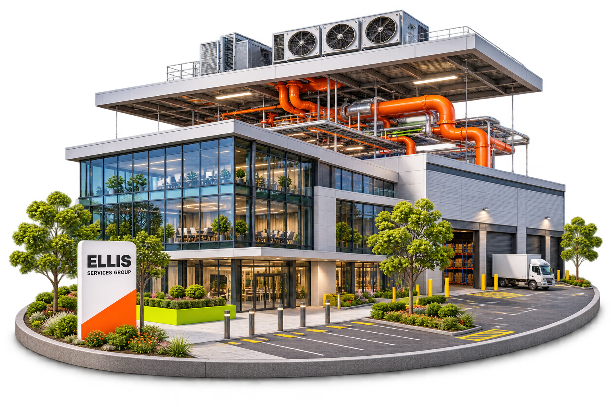
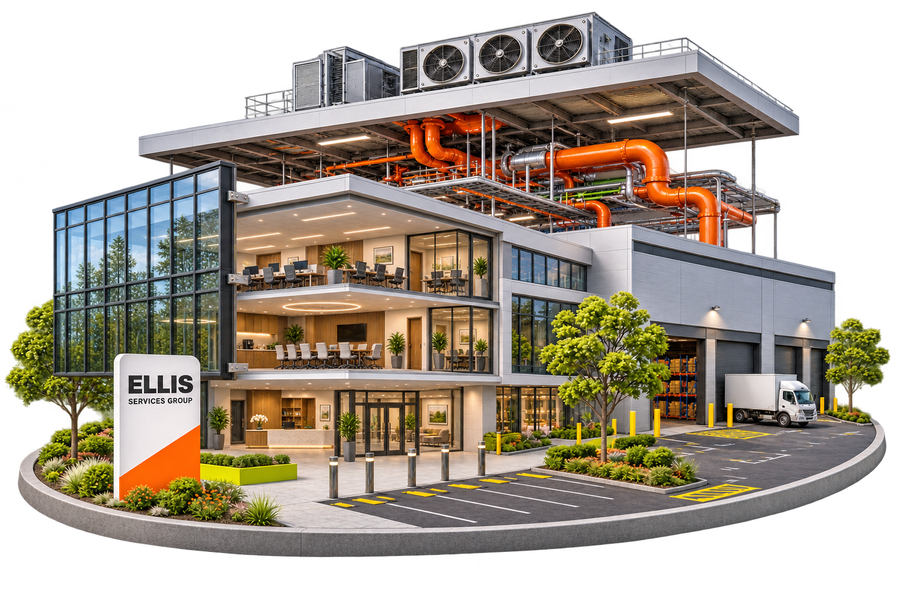
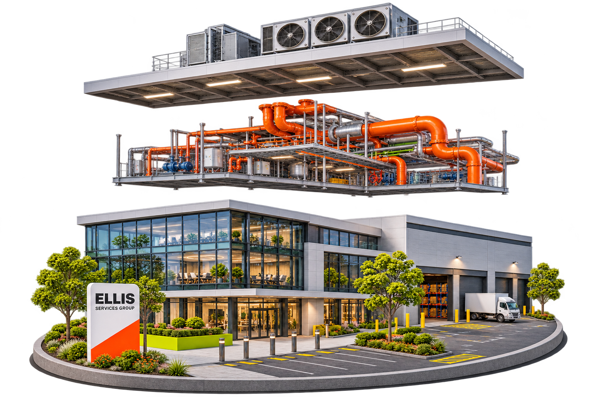
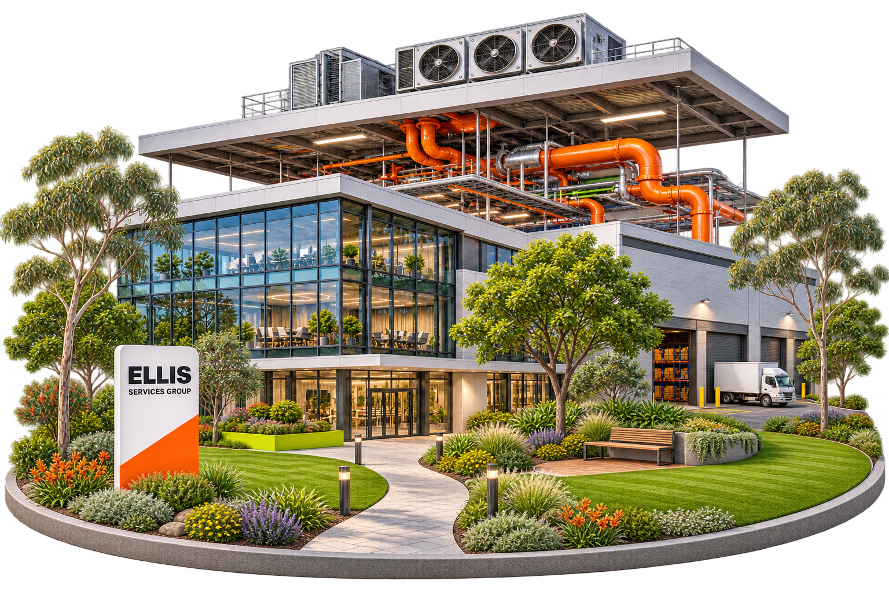

Melbourne / 墨尔本
一个团队。照顾每个细节。
墨尔本商业物业维护与维修
我们为墨尔本的商业物业提供建筑维修、空调水电、设备系统、园林绿化、广告标识及外立面高空清洁，统筹单项维修、定期维护与多工种施工。
单项维修 · 定期维护 · 多工种工程
Melbourne / 墨尔本
一个团队。照顾每个细节。
我们为墨尔本的商业物业提供建筑维修、空调水电、设备系统、园林绿化、广告标识及外立面高空清洁，统筹单项维修、定期维护与多工种施工。
建筑与室内
屋顶、防水、墙面、门窗、地面、木工与室内翻新。把分散的维修工作，纳入完整的物业安排。
设备与楼宇系统
空调、通风、水电、设备维护，以及消防、安防与门禁协调。结合设备和现场运营，协调对应工种与维护工作。
场地、品牌与环境
园林、标识、外立面、停车场与商业清洁。让建筑内外的维护工作连成整体。




建筑示意暂不可用，服务内容可继续浏览。
我们的服务 / MELBOURNE
墙体 · 门窗 · 地面 · 木工
屋面 · 排水槽 · 防水 · 渗漏
配电 · 灯具 · 线路 · 电力
供水 · 排污 · 热水 · 燃气
空调 · 通风 · 制冷 · 设备
消防 · 监控 · 自动门 · 门禁
草坪 · 植栽 · 灌溉 · 场地
店招 · 灯箱 · 导视 · 品牌
玻璃 · 外墙 · 高空 · 清洗
日常清洁 · 深度清洁 · 环境
地坪 · 划线 · 围栏 · 道路
装修 · 改造 · 翻新 · 退租恢复
一个项目，需要多个工种？交给我们统筹安排。
02 /商业种类
继续向下滚动，
探索我们服务的商业场所。
服务地区 / SERVICE AREAS
选择所在大区，查看商业维修与维护服务。
04 / 新闻与见解
关于商业物业、日常维护和场地更新的实用思路。
05 /常见问题
我们为办公室、商铺、餐厅、购物中心、仓库、厂房及商业楼宇公共区域提供服务。我们根据物业用途、现场设备和施工范围安排相应工作。
可以。我们可以统筹建筑维修、空调、水电、设备、园林、标识和清洁等工作，并根据现场情况安排施工顺序。
两种都接受。我们承接单次维修、翻新及设备更新，也可根据物业需求制定持续维护安排。
我们为墨尔本商业物业提供维修与维护服务。提供物业地址后，我们会确认具体现场安排。
准备物业地址、需要处理的项目及联系方式即可。现场照片、图纸或维修清单也能帮助明确范围。本页为设计预览，表单可生成咨询草稿，暂不发送信息。
06 / 关于 ELLIS
MELBOURNE · COMMERCIAL SERVICESABN 96 645 821 745 · ACN 645 821 745 · VIC 3030, Australia
COMPANY REGISTRATION
登记信息核对于 2026 年 11 月 13 日
地图与项目联系
我们为墨尔本商业物业统筹建筑、设备与场地维护。请提供物业地址和项目需求，安排下一步沟通。
位置以我们的 Google 商家地图为准。到访前请先电话联系确认。
07 /联系我们
告诉我们物业在哪、需要做什么。一起把项目安排清楚。
UI 预览 · 咨询表单可体验，暂不发送信息